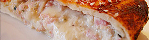

Calzone
5 von 62 eier, spinat, ricotta, pepperoni, champignons und parmesan in einer schüssel gut mischen. mit salz
und pfeffer würzen und die masse auf dem pizzateig verteilen. den teig wie eine tasche schliessen
und bei ca. 200 C 20-25 min backen.
